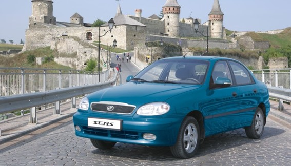

По результатам 2014 года ЗАЗ Sens второй год подряд становится лидером продаж

Традиционно в первые дни января подводятся итоги автомобильного рынка Украины. По данным Ассоциации автопроизводителей Украины «Укравтопром» - модель ЗАЗ Sens, как и в 2013 году, становится самой продаваемой моделью на рынке страны! За 12 месяцев прошлого года был реализован 3 291 автомобиль модели ЗАЗ Sens. Модель стала лидером продаж в 16 областях Украины!
Так же популярны на рынке были и другие модели бренда ЗАЗ - ЗАЗ VIDA і ЗАЗ Lanos, они вошли в ТОП-пять самых продаваемых моделей. Четвертое и пятое место за представителями бренда ЗАЗ – VIDA и Lanos, с показателями соответственно 2 186 и 2 096 единиц.
Модели бренда ЗАЗ подтвердили репутацию качественных и одних из самых доступных автомобилей на рынке Украины, которые выбирают наши соотечественники. «В 2014 году, очень непростом для всей страны и автомобильного рынка, мы смогли закрепить успех бренда ЗАЗ, чем бесспорно очень гордимся», комментирует продемонстрированные результаты Генеральный директор Филиала «АвтоЗАЗ-сервис» Андрей Залуцкий.
Важными составляющими успеха ЗАЗ есть постоянная работа производителя по расширению комплектаций автомобилей, введению новых опций и самое главное – постоянная работа по поддержанию качества производства на высоком уровне. И в нынешнем году, во чтобы то ни стало, данная работа будет продолжаться.
Напомним, что на автомобили ЗАЗ распространяется сервисная гарантия в 3 года, или 100 тыс. км пробега. При этом межсервисный интервал составляет 15 тыс. км, что соответствует европейским стандартам гарантийной политики обслуживания автомобилей.